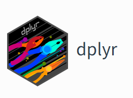

Manipulación y manejo de datos
Una introducción al lenguaje de programación
Objetivo
Aprender a subir datasets, cargar datasets, usar librerías de datasets y modificar mediante Dplyr y comandos propios de R los datos.
Algunas consideraciones antes de iniciar
Para proceder con esta clase usaremos algunos datasets obtenidos desde librerías específicas en R
Haremos uso del siguiente script para importar nuestros datasets.
Este paquete se incluye en R.
En esta clase se hará manejo de bases de datos.
package 'palmerpenguins' successfully unpacked and MD5 sums checked
The downloaded binary packages are in
C:\Users\Xavier\AppData\Local\Temp\RtmpkNsy5P\downloaded_packagesSe puede visitar la página del creador en Palmerpenguins

“Palmerpenguins” incluye un dataset interesante.
Para usar Palmerpenguins debe instalarse con las funciones de arriba
Importación de datos
En esta librería existe un set de datos bastante amplio. Vamos a usar penguins
# A tibble: 344 × 8
species island bill_length_mm bill_depth_mm flipper_length_mm body_mass_g
<fct> <fct> <dbl> <dbl> <int> <int>
1 Adelie Torgersen 39.1 18.7 181 3750
2 Adelie Torgersen 39.5 17.4 186 3800
3 Adelie Torgersen 40.3 18 195 3250
4 Adelie Torgersen NA NA NA NA
5 Adelie Torgersen 36.7 19.3 193 3450
6 Adelie Torgersen 39.3 20.6 190 3650
7 Adelie Torgersen 38.9 17.8 181 3625
8 Adelie Torgersen 39.2 19.6 195 4675
9 Adelie Torgersen 34.1 18.1 193 3475
10 Adelie Torgersen 42 20.2 190 4250
# ℹ 334 more rows
# ℹ 2 more variables: sex <fct>, year <int>Como puedes ver la base de datos es bastante amplia e incluye 8 columnas.
Algunos comandos adicionales
Según qué área te interese de este dataset podrás utilizarla a tu antojo. Existen algunos comandos que podrían ser de interés:
| Función | Definición |
|---|---|
| fix | Modificar manualmente una secicón de los datos |
| head | Muestra las primeras 6 filas de datos |
| summary | Genera un resumen estadístico del set de datos |
| split | Puede cortar el set de datos según el orden específico |
| dim | Muestra número de filas y columnas |
| str | Da la estructura del dataset |
| tail | Muestra las últimas filas del set de datos |
De esta forma, en la siguiente diapositiva verás algunos ejemplos prácticos con penguins
Sobre fix() , head() y tail()
Fix es una forma de arreglo manual de matríces o frames. Es muy útil para cambios puntuales.
head() permite mostrar las primeras 6 filas de una tabla, no importa su tamaño. Por ejemplo:
# A tibble: 6 × 8
species island bill_length_mm bill_depth_mm flipper_length_mm body_mass_g
<fct> <fct> <dbl> <dbl> <int> <int>
1 Adelie Torgersen 39.1 18.7 181 3750
2 Adelie Torgersen 39.5 17.4 186 3800
3 Adelie Torgersen 40.3 18 195 3250
4 Adelie Torgersen NA NA NA NA
5 Adelie Torgersen 36.7 19.3 193 3450
6 Adelie Torgersen 39.3 20.6 190 3650
# ℹ 2 more variables: sex <fct>, year <int>Sobre summary(), dim() y str()
Summary() es probablemente la forma automática de acercarnos a la estadística descriptiva en R.
Un ejemplo con summary() sería:
#Tomaremos una parte de la base de datos que podamos usar para calcular:
summary(penguins$bill_depth_mm) Min. 1st Qu. Median Mean 3rd Qu. Max. NA's
13.10 15.60 17.30 17.15 18.70 21.50 2 Min. 1st Qu. Median Mean 3rd Qu. Max. NA's
172.0 190.0 197.0 200.9 213.0 231.0 2 Ahora probemos con el total de la base de datos.
species island bill_length_mm bill_depth_mm
Adelie :152 Biscoe :168 Min. :32.10 Min. :13.10
Chinstrap: 68 Dream :124 1st Qu.:39.23 1st Qu.:15.60
Gentoo :124 Torgersen: 52 Median :44.45 Median :17.30
Mean :43.92 Mean :17.15
3rd Qu.:48.50 3rd Qu.:18.70
Max. :59.60 Max. :21.50
NA's :2 NA's :2
flipper_length_mm body_mass_g sex year
Min. :172.0 Min. :2700 female:165 Min. :2007
1st Qu.:190.0 1st Qu.:3550 male :168 1st Qu.:2007
Median :197.0 Median :4050 NA's : 11 Median :2008
Mean :200.9 Mean :4202 Mean :2008
3rd Qu.:213.0 3rd Qu.:4750 3rd Qu.:2009
Max. :231.0 Max. :6300 Max. :2009
NA's :2 NA's :2 Haciendo una “estadística” general obtendremos lo anterior.
Dim por otro lado nos permite visualizar la cantidad de datos almacenadas en un objeto. En este caso el objeto penguins contiene 344 datos y 8 columnas.
str() por otro lado entrega el tipo de dato. Es decir nos muestra la estructura en la que está compuesta.
tibble [344 × 8] (S3: tbl_df/tbl/data.frame)
$ species : Factor w/ 3 levels "Adelie","Chinstrap",..: 1 1 1 1 1 1 1 1 1 1 ...
$ island : Factor w/ 3 levels "Biscoe","Dream",..: 3 3 3 3 3 3 3 3 3 3 ...
$ bill_length_mm : num [1:344] 39.1 39.5 40.3 NA 36.7 39.3 38.9 39.2 34.1 42 ...
$ bill_depth_mm : num [1:344] 18.7 17.4 18 NA 19.3 20.6 17.8 19.6 18.1 20.2 ...
$ flipper_length_mm: int [1:344] 181 186 195 NA 193 190 181 195 193 190 ...
$ body_mass_g : int [1:344] 3750 3800 3250 NA 3450 3650 3625 4675 3475 4250 ...
$ sex : Factor w/ 2 levels "female","male": 2 1 1 NA 1 2 1 2 NA NA ...
$ year : int [1:344] 2007 2007 2007 2007 2007 2007 2007 2007 2007 2007 ...Class() nos permite visualizar la clase de función u objeto a utilizar.
Introducción al Dplyr

Es un paquete que permite la manipulación de datos a través de verbos claves que pueden ser útiles en el manejo de información.
Algunos de los comandos para manipulación de datos son:
Manipulación con Dplyr
Iniciemos un ejemplo. Para esto supongamos que:
# A tibble: 6 × 8
species island bill_length_mm bill_depth_mm flipper_length_mm body_mass_g
<fct> <fct> <dbl> <dbl> <int> <int>
1 Adelie Torgersen 39.1 18.7 181 3750
2 Adelie Torgersen 39.5 17.4 186 3800
3 Adelie Torgersen 40.3 18 195 3250
4 Adelie Torgersen NA NA NA NA
5 Adelie Torgersen 36.7 19.3 193 3450
6 Adelie Torgersen 39.3 20.6 190 3650
# ℹ 2 more variables: sex <fct>, year <int>Uso de Select()
# A tibble: 344 × 2
species body_mass_g
<fct> <int>
1 Adelie 3750
2 Adelie 3800
3 Adelie 3250
4 Adelie NA
5 Adelie 3450
6 Adelie 3650
7 Adelie 3625
8 Adelie 4675
9 Adelie 3475
10 Adelie 4250
# ℹ 334 more rowsEs necesario que sepamos que los datos nunca pueden estar en los siguiente formatos para este tipo de comandos. “tbl_df”, “tbl”, “data.frame”
Usando filter ()
Filtrar puede ser una opción interesante cuando sabemos el tipo y la información específica de datos que queremos revisar. Es especialmente útil cuando tenemos que manejar bases de datos amplias.
Tomaremos el siguiente ejemplo con penguis
# A tibble: 52 × 8
species island bill_length_mm bill_depth_mm flipper_length_mm body_mass_g
<fct> <fct> <dbl> <dbl> <int> <int>
1 Adelie Torgersen 39.1 18.7 181 3750
2 Adelie Torgersen 39.5 17.4 186 3800
3 Adelie Torgersen 40.3 18 195 3250
4 Adelie Torgersen NA NA NA NA
5 Adelie Torgersen 36.7 19.3 193 3450
6 Adelie Torgersen 39.3 20.6 190 3650
7 Adelie Torgersen 38.9 17.8 181 3625
8 Adelie Torgersen 39.2 19.6 195 4675
9 Adelie Torgersen 34.1 18.1 193 3475
10 Adelie Torgersen 42 20.2 190 4250
# ℹ 42 more rows
# ℹ 2 more variables: sex <fct>, year <int>Uso de mutate()
¿Ha tenido ese problema típico de que debe agregar nuevas columnas o modificar las existentes y ha pensado que quizás hay que subir nuevamente la tabla?
Justamente mutate() representa una posible solución a este tipo de problemas que puedes encontrar durante la manipulación de datos.
Partamos del siguiente ejemplo:
nueva_variable<-penguins%>%mutate(diferencia_de_medidas = penguins$bill_length_mm / penguins$bill_depth_mm)
nueva_variable%>%select(diferencia_de_medidas, bill_length_mm, bill_depth_mm)# A tibble: 344 × 3
diferencia_de_medidas bill_length_mm bill_depth_mm
<dbl> <dbl> <dbl>
1 2.09 39.1 18.7
2 2.27 39.5 17.4
3 2.24 40.3 18
4 NA NA NA
5 1.90 36.7 19.3
6 1.91 39.3 20.6
7 2.19 38.9 17.8
8 2 39.2 19.6
9 1.88 34.1 18.1
10 2.08 42 20.2
# ℹ 334 more rows¿Qué hemos hecho aquí?
Ejercicio práctico No. 1
Crear una base de datos o utilizar penguins o penguins_raw para ejemplificar algunos de los comandos vistos.
Tienen 10 minutos.
Uso de summarise()
Permite crear un data.frame nuevo.
#Creamos una variable para contener penguins
new_penguins<-penguins%>%summarise(penguins$island)
#Corremos la variable.
new_penguins# A tibble: 344 × 1
`penguins$island`
<fct>
1 Torgersen
2 Torgersen
3 Torgersen
4 Torgersen
5 Torgersen
6 Torgersen
7 Torgersen
8 Torgersen
9 Torgersen
10 Torgersen
# ℹ 334 more rowsUso de arrange()
La siguiente función permite ordenar creciente o decrecientemente datos de una tabla.
Por ejemplo, podemos realizar el siguiente ejemplo:
# A tibble: 344 × 8
species island bill_length_mm bill_depth_mm flipper_length_mm body_mass_g
<fct> <fct> <dbl> <dbl> <int> <int>
1 Adelie Torgers… 46 21.5 194 4200
2 Adelie Torgers… 38.6 21.2 191 3800
3 Adelie Dream 42.3 21.2 191 4150
4 Adelie Torgers… 34.6 21.1 198 4400
5 Adelie Dream 39.2 21.1 196 4150
6 Adelie Biscoe 41.3 21.1 195 4400
7 Chinstrap Dream 54.2 20.8 201 4300
8 Adelie Torgers… 42.5 20.7 197 4500
9 Adelie Biscoe 39.6 20.7 191 3900
10 Chinstrap Dream 52 20.7 210 4800
# ℹ 334 more rows
# ℹ 2 more variables: sex <fct>, year <int>Podemos aplicar otras variantes de lo visto
Y este sería nuestro resultado más resumido.
Variables NA en R
Muchas veces nos encontraremos con bases de datos con valores ausentes, es decir con sus espacios, lo que puede dificultar la lectura, análisis o construcción de gráficos con dichos datos, es por ello que una forma de solucionar este tipo de problemas es con las funciones que genera NA.
is.na() es una de las primeras funciones del manejo de datos NA en R. Ejemplo:
[1] FALSE FALSE FALSE TRUE FALSE FALSE¿Qué hemos creado aquí?Creamos una función que funciona a través de booleanos y nos permite decir si en esta columna “bill_length_mm” existen o no valores “NA”.
Uso de ColSums
species island bill_length_mm bill_depth_mm
0 0 2 2
flipper_length_mm body_mass_g
2 2 bill_length_mm bill_depth_mm flipper_length_mm body_mass_g
2 2 2 2
sex year
11 0 Ejercicio práctico No. 2
Ahora es tu turno!. Carga una base de datos o utiliza penguins para probar lo aprendido. Recuerda utilizar mutate(), select(), arrange() y las demás funciones aprendidas.
Tienes 10 minutos.
¿Y si quiero usar is.na para ver los NA presentes en las columnas?
Introducción al uso de na.omit()
na.omit() es precisamente el comando que podemos utilizar para obviar u omitir cierto tipo de datos no sumatorios u operables en general.
Muchas gracias por su atención
Referencias
Palmerpenguins
Melbourne Bioinformatics. (2023) R for biologists GitHub